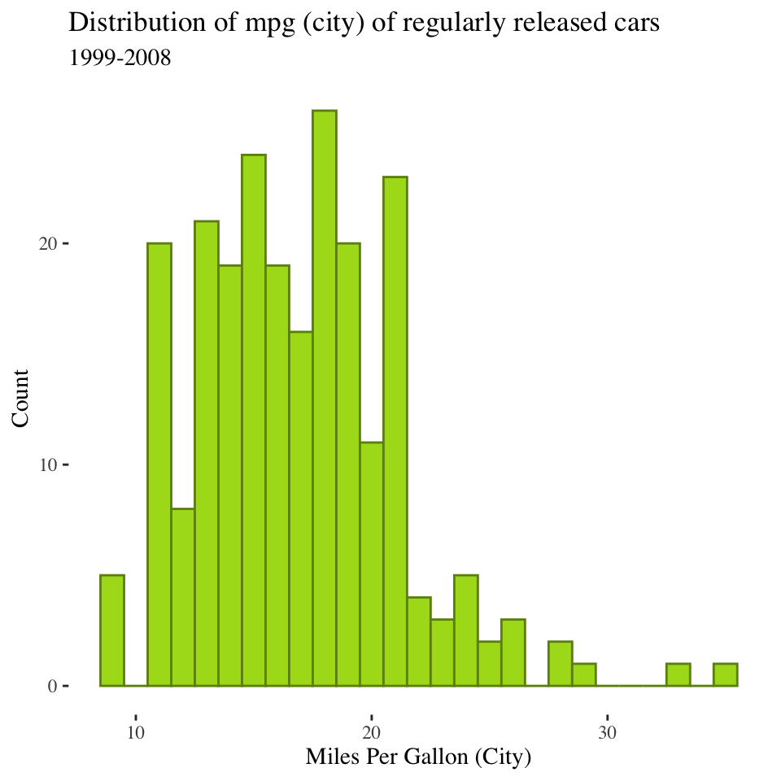
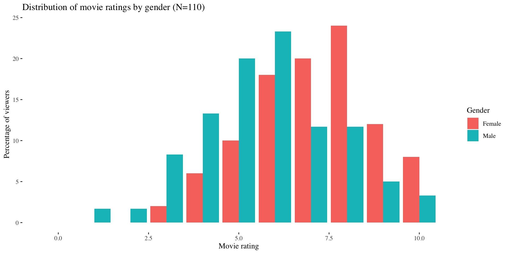
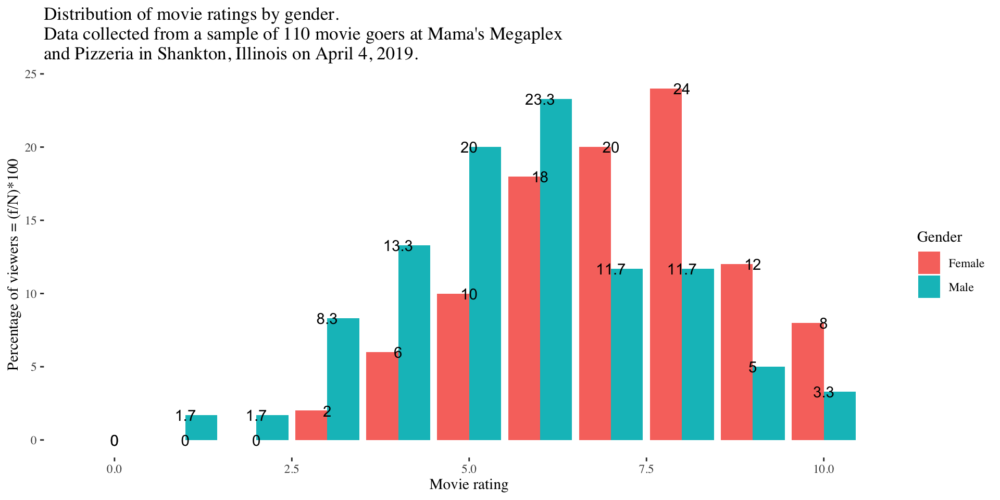
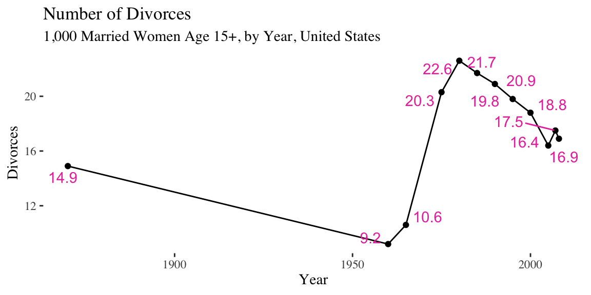
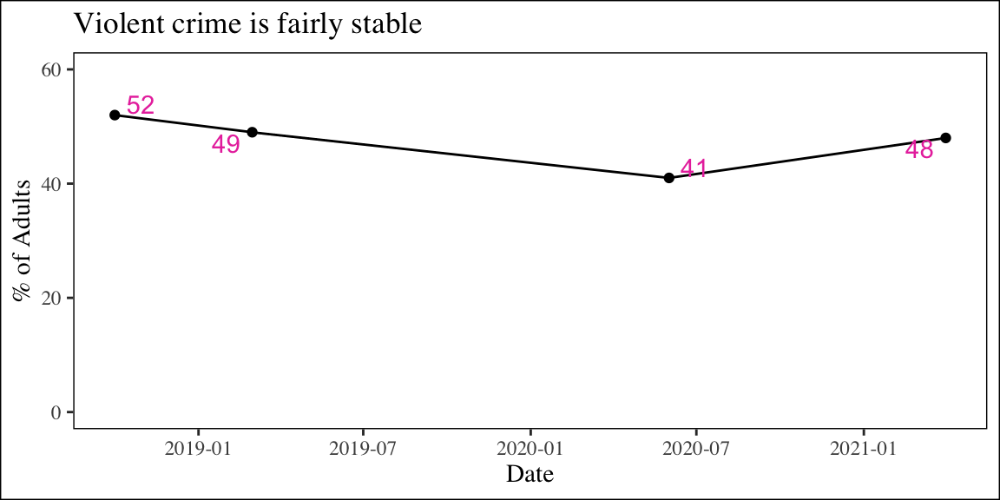

| Person # | birth_year | gender | ethnicity | race |
|---|---|---|---|---|
| 1 | 1992 | 1 | 1 | 5 |
| 2 | 1993 | 2 | 0 | 5 |
| 3 | 1995 | 2 | 0 | 2 |
| 4 | 1980 | 2 | 0 | 3 |
| 5 | 1991 | 1 | 1 | 5 |
| 6 | 1975 | 4 | 1 | 1 |
| 7 | 1960 | 1 | 0 | 6 |
| 8 | 1952 | 1 | 0 | 5 |
| 9 | 2000 | 3 | 0 | 3 |
| 10 | 1990 | 1 | 1 | 2 |
| 11 | 1993 | 2 | 1 | 4 |
| 12 | 1992 | 3 | 0 | 4 |
Frequency tables &
Graphical techniques
SOC 221 • Lecture 2
Victoria Sass
Wednesday, June 25, 2025
Frequency tables
What do we do with data?
Apply some STATISTICS to answer interesting questions…
Descriptive statistics
Descriptive statistics
Procedures that help us organize
summarize, and describe the
distribution of a variable.
Distribution
The list of the entire set of observed
values of a variable, indicating all values
and how often those values occur.
- Descriptive statistics allow us to summarize information in a distribution more efficiently
- The type of descriptive statistics we can use to summarize a variable depends on how the variable is measured (i.e. its LEVEL OF MEASUREMENT)
Each column of our dataset contains the distribution of a different variable
Frequency tables: overview
Purpose of a frequency table
- Frequency distribution table = descriptive tool to display the frequency of cases with various values/scores on the variable of interest.
- Often present frequencies in multiple ways
- raw frequencies
- relative frequencies (percentages)
- cumulative frequencies
- cumulative percentages
- etc.
Frequency table: step 1
Record raw data
Movie ratings (scale from 0 to 10 for 110 viewers)
> [1] 5 8 3 6 5 8 3 7 9 10 6 8 7 4 6 5
> [17] 8 7 4 6 5 3 6 1 8 6 8 5 6 6 8 9
> [33] 6 9 6 5 9 9 6 5 8 5 8 4 8 6 7 4
> [49] 8 6 8 7 6 8 5 7 6 9 6 10 4 8 6 8
> [65] 6 5 4 7 8 5 7 4 5 5 9 6 6 7 5 3
> [81] 10 3 5 7 9 10 6 7 4 10 6 9 8 7 8 5
> [97] 7 4 10 6 7 4 2 3 8 5 4 7 7 7Frequency table: step 2
Count the number of cases for each category
| 0 | |
| 1 | / |
| 2 | / |
| 3 | ///// / |
| 4 | ///// //// / |
| 5 | ///// ///// ///// // |
| 6 | ///// ///// ///// ///// /// |
| 7 | ///// ///// ///// // |
| 8 | ///// ///// ///// //// |
| 9 | ///// //// |
| 10 | ///// / |
Frequency table: step 3
Place in raw frequency table
| Movie Rating (score) |
Frequency (f) |
|||
|---|---|---|---|---|
| 0 | 0 | |||
| 1 | 1 | |||
| 2 | 1 | |||
| 3 | 6 | |||
| 4 | 11 | |||
| 5 | 17 | |||
| 6 | 23 | |||
| 7 | 17 | |||
| 8 | 19 | |||
| 9 | 9 | |||
| 10 | 6 | |||
| Total (N) | 110 |
Descriptive title
First column: all possible values (sometimes labeled with a variable symbol, e.g. x )
Second column: number of times each value appears in the data
N = total number of cases in the data
Frequency table: step 4:
Add a percentage (relative frequency) column
| Movie Rating (score) |
Frequency (f) |
Percent (%) |
||
|---|---|---|---|---|
| 0 | 0 | 0 | ||
| 1 | 1 | 0.9 | ||
| 2 | 1 | 0.9 | ||
| 3 | 6 | 5.4 | ||
| 4 | 11 | 10 | ||
| 5 | 17 | 15.5 | ||
| 6 | 23 | 20.9 | ||
| 7 | 17 | 15.5 | ||
| 8 | 19 | 17.3 | ||
| 9 | 9 | 8.2 | ||
| 10 | 6 | 5.4 | ||
| Total (N) | 110 | 100 |
\[ Pct_x = \frac{f_x}{N} (100) \]
\[ Pct_0 = \frac{0}{110} (100) \]
\[ Pct_5 = \frac{17}{110} (100) \]
Percentages always add to 100
Frequency table: step 4.1:
Make comparisons across categories
| Movie Rating (score) |
Frequency (f) |
Percent (%) |
||
|---|---|---|---|---|
| 0 | 0 | 0 | ||
| 1 | 1 | 0.9 | ||
| 2 | 1 | 0.9 | ||
| 3 | 6 | 5.4 | ||
| 4 | 11 | 10 | ||
| 5 | 17 | 15.5 | ||
| 6 | 23 | 20.9 | ||
| 7 | 17 | 15.5 | ||
| 8 | 19 | 17.3 | ||
| 9 | 9 | 8.2 | ||
| 10 | 6 | 5.4 | ||
| Total (N) | 110 | 100 |
Comparing relative frequency of different values \[ Ratio = \frac{Pct_x}{Pct_y} = \frac{f_x}{f_y} \]
Ratio of 5s to 10s: \[ \frac{15.5}{5.4} = 2.87 \]
Frequency table: step 4.2:
Make comparisons across groups
| Movie Rating (score) |
Frequency (f) |
Percent (%) |
|---|---|---|
| 0 | 0 | 0.0 |
| 1 | 0 | 0.0 |
| 2 | 0 | 0.0 |
| 3 | 1 | 2.0 |
| 4 | 3 | 6.0 |
| 5 | 5 | 10.0 |
| 6 | 9 | 18.0 |
| 7 | 10 | 20.0 |
| 8 | 12 | 24.0 |
| 9 | 6 | 12.0 |
| 10 | 4 | 8.0 |
| Total (N) | 50 | 100 |
| Frequency (f) |
Percent (%) |
|---|---|
| 0 | 0.0 |
| 1 | 1.7 |
| 1 | 1.7 |
| 5 | 8.3 |
| 8 | 13.3 |
| 12 | 20.0 |
| 14 | 23.3 |
| 7 | 11.7 |
| 7 | 11.7 |
| 3 | 5.0 |
| 2 | 3.3 |
| 60 | 100 |
Gender ratio of 10s: \[ \frac{8.0}{3.3} = 2.42 \]
Frequency table: step 5
Add a cumulative frequency column
| Movie Rating (score) |
Frequency (f) |
Percent (%) |
Cf |
|
|---|---|---|---|---|
| 0 | 0 | 0 | 0 | |
| 1 | 1 | 0.9 | 1 | |
| 2 | 1 | 0.9 | 2 | |
| 3 | 6 | 5.4 | 8 | |
| 4 | 11 | 10 | 19 | |
| 5 | 17 | 15.5 | 36 | |
| 6 | 23 | 20.9 | 59 | |
| 7 | 17 | 15.5 | 76 | |
| 8 | 19 | 17.3 | 95 | |
| 9 | 9 | 8.2 | 104 | |
| 10 | 6 | 5.4 | 110 | |
| Total (N) | 110 | 100 |
Cumulative frequency (Cf) =
Number of cases in the given category and lower categories
Cf in highest category = N
Frequency table: step 6
Add a cumulative percentage column
| Movie Rating (score) |
Frequency (f) |
Percent (%) |
Cf |
CPcnt |
|---|---|---|---|---|
| 0 | 0 | 0 | 0 | 0 |
| 1 | 1 | 0.9 | 1 | 0.9 |
| 2 | 1 | 0.9 | 2 | 1.8 |
| 3 | 6 | 5.4 | 8 | 7.2 |
| 4 | 11 | 10 | 19 | 17.2 |
| 5 | 17 | 15.5 | 36 | 32.7 |
| 6 | 23 | 20.9 | 59 | 53.6 |
| 7 | 17 | 15.5 | 76 | 69.1 |
| 8 | 19 | 17.3 | 95 | 86.4 |
| 9 | 9 | 8.2 | 104 | 94.6 |
| 10 | 6 | 5.4 | 110 | 100 |
| Total (N) | 110 | 100 |
Cumulative
percentage (C%) =
Percentage of cases in the given category and lower categories
\[ C\%_x = \frac{Cf_x}{N} (100) \]
\[ C\%_4 = \frac{19}{110} (100) \]
C% in highest category = 100
Things to watch out for
Reverse ordering of categories
| Number of courses |
Frequency (f) |
Percent (%) |
Cf |
CPcnt |
|---|---|---|---|---|
| 6 | 2 | |||
| 5 | 4 | |||
| 4 | 8 | |||
| 3 | 24 | |||
| 2 | 26 | |||
| 1 | 18 | |||
| 0 | 3 | |||
| Total (N) | 85 |
Things to watch out for
Reverse ordering of categories
| Number of courses |
Frequency (f) |
Percent (%) |
Cf |
CPcnt |
|---|---|---|---|---|
| 6 | 2 | 2.35 | 85 | 100.00 |
| 5 | 4 | 4.71 | 83 | 97.65 |
| 4 | 8 | 9.41 | 79 | 92.94 |
| 3 | 24 | 28.24 | 71 | 83.53 |
| 2 | 26 | 30.59 | 47 | 55.29 |
| 1 | 18 | 21.18 | 21 | 24.71 |
| 0 | 3 | 3.53 | 3 | 3.53 |
| Total (N) | 85 | 100 |
Things to watch out for
Level of measurement makes some columns inappropriate
Major |
Frequency (f) |
Percent (%) |
Cf |
CPcnt |
|---|---|---|---|---|
| Arts | 61 | |||
| Humanities | 385 | |||
| Social Science | 425 | |||
| Business | 265 | |||
| Physical Sciences | 194 | |||
| Other | 10 | |||
| Total (N) | 1340 |
Level of measurement?
Things to watch out for
Level of measurement makes some columns inappropriate
Major |
Frequency (f) |
Percent (%) |
Cf |
CPcnt |
|---|---|---|---|---|
| Arts | 61 | 4.55 | ||
| Humanities | 385 | 28.73 | ||
| Social Science | 425 | 31.72 | ||
| Business | 265 | 19.78 | ||
| Physical Sciences | 194 | 14.48 | ||
| Other | 10 | 0.75 | ||
| Total (N) | 1340 | 100 |
Frequency or % “above” or “below” makes no sense without inherent ordering
Things to watch out for
What seems strange here?
Response |
Frequency (f) |
Percent (%) |
Cf |
CPcnt |
|---|---|---|---|---|
| Very Dissatisfied | 7 | 9.33 | 7 | 9.33 |
| Somewhat Dissatisfied | 22 | 29.33 | 29 | 38.67 |
| Somewhat Satisfied | 20 | 26.67 | 49 | 65.33 |
| Very Satisfied | 8 | 10.67 | 57 | 76.0 |
| No Answer | 18 | 24 | 75 | 100.00 |
| Total (N) | 75 | 100 |
Things to watch out for
Missing information
Response |
Frequency (f) |
Percent (%) |
Cf |
CPcnt |
|---|---|---|---|---|
| Very Dissatisfied | 7 | 9.33 | 7 | 9.33 |
| Somewhat Dissatisfied | 22 | 29.33 | 29 | 38.67 |
| Somewhat Satisfied | 20 | 26.67 | 49 | 65.33 |
| Very Satisfied | 8 | 10.67 | 57 | 76.0 |
| No Answer | 18 | 24 | 75 | 100.00 |
| Total (N) | 75 | 100 |
Question: Was a majority at least somewhat dissatisfied with the course (somewhat dissatisfied or worse)?
Things to watch out for
Missing information
Response |
Frequency (f) |
Percent (%) |
Cf |
CPcnt |
|---|---|---|---|---|
| Very Dissatisfied | 7 | 12.28 | 7 | 12.28 |
| Somewhat Dissatisfied | 22 | 38.60 | 29 | 50.88 |
| Somewhat Satisfied | 20 | 35.09 | 49 | 85.96 |
| Very Satisfied | 8 | 14.04 | 57 | 100 |
| No Answer | 18 | 24 | 75 | 100.00 |
| Valid (N) | 57 | 100 |
Question: Was a majority at least somewhat dissatisfied with the course (somewhat dissatisfied or worse)?
Best practice: Calculate all statistics based on information from those cases with valid (known) information on the variables of interest.
Practice
The following table contains the total number of deaths worldwide as a result of earthquakes for the period from 2000 to 2012.
| Year | Total Number of Deaths |
|---|---|
| 2000 | 231 |
| 2001 | 21,357 |
| 2002 | 11,685 |
| 2003 | 33,819 |
| 2004 | 228,802 |
| 2005 | 88,003 |
| 2006 | 6,605 |
| 2007 | 712 |
| 2008 | 88, 011 |
| 2009 | 1,790 |
| 2010 | 320,120 |
| 2011 | 21,953 |
| 2012 | 768 |
| Total (N) | 823,856 |
Answer the following questions:
- What is the frequency of deaths measured from 2006 through 2009? (inclusive)
- What percentage of deaths occurred after 2009?
- What is the relative frequency of deaths that occurred in 2003 or earlier?
- What is the percentage of deaths that occurred in 2004?
- What kind of data are the numbers of deaths?
- The Richter scale is used to quantify the energy produced by an earthquake. Examples of Richter scale numbers are 2.3, 4.0, 6.1, and 7.0. What kind of data are these numbers?
Break!
Graphical techniques
Graphical Techniques
Descriptive tools to
display the distribution
of variables, or the
association between
variables, using
pictures or figures.
- Huge topic that people spend their lifetimes perfecting
Today’s goals
- Brief intro to basic types
- Basic guidelines for responsible graphing (given great potential to confuse or mislead)
5 rules for responsible graphs
- Choose the right kind of graph
- Level of measurement
- Bar charts, histograms, line charts etc.
- Clearly label the nature of the information
- Title and axis labels are standard
- Focus on your perspective
- Watch for angles, axis dimensions that skew results
- Keep it simple
- Avoid extraneous, distracting information
- Avoid the use of shapes that do not help convey information
- Be objective!
Rule 1: Choose the right kind of graph
Nominal & ordinal variables
Bar chart/graph: % or number of cases in each category
- Summarizes the distribution (relative size of the categories)
- Questions:
- Biggest category?
- Smallest category?
- How much bigger is the biggest category from the 2nd biggest category?
Rule 1: Choose the right kind of graph
Nominal & ordinal variables
Bar chart/graph: % or number of cases in each category
Categories do not necessarily need to add up to 100%
- This chart likely contains responses to several different questions/items.
- Did you drink on Monday?
- Did you drink on Tuesday?
- Etc.
- Level of measurement of the variables produced by these items?
- Nominal
- This type of variable is called a dichotomous (2 values) or dummy (0, 1) variable.
Rule 1: Choose the right kind of graph
Interval variables
Histogram: summarizes the number of cases with each value (or range) on a variable

- Usually used for continuous variables (this is why the bars touch)
- All bars add up to 100% of individuals
Histograms tell us about the SHAPE of a distribution
- Center:
- Most common value or values
- Where the cases tend to be clustered/centered
- Spread:
- Is there a lot of diversity (cases spread out across the values of the variable)…
- Or are most cases clustered within a few values
- Symmetry vs. Skewness

Rule 1: Choose the right kind of graph
Interval variables
Histogram: summarizes the number of cases with each value (or range) on a variable

- Usually used for continuous variables (this is why the bars touch)
- All bars add up to 100% of individuals
- What can you say about the shape of this distribution?
Rule 1: Choose the right kind of graph
Time-series data
Time plots: Shows us trends and discontinuity (unusual periods)
- Time always on the horizontal (x) axis
- Value of the variable always on the vertical (y) axis.
5 rules for responsible graphs
- Choose the right kind of graph
- Level of measurement
- Bar charts, histograms, line charts etc.
- Clearly label the nature of the information
- Title and axis labels are standard
- Focus on your perspective
- Watch for angles, axis dimensions that skew results
- Keep it simple
- Avoid extraneous, distracting information
- Avoid the use of shapes that do not help convey information
- Be objective!
Rule 2: Clearly label the nature of the information
5 rules for responsible graphs
- Choose the right kind of graph
- Level of measurement
- Bar charts, histograms, line charts etc.
- Clearly label the nature of the information
- Title and axis labels are standard
- Focus on your perspective
- Watch for angles, axis dimensions that skew results
- Keep it simple
- Avoid extraneous, distracting information
- Avoid the use of shapes that do not help convey information
- Be objective!
Rule 3: Focus on your perspective
Rule 3: Focus on your perspective

5 rules for responsible graphs
- Choose the right kind of graph
- Level of measurement
- Bar charts, histograms, line charts etc.
- Clearly label the nature of the information
- Title and axis labels are standard
- Focus on your perspective
- Watch for angles, axis dimensions that skew results
- Keep it simple
- Avoid extraneous, distracting information
- Avoid the use of shapes that do not help convey information
- Be objective!
Rule 4: Keep it simple
5 rules for responsible graphs
- Choose the right kind of graph
- Level of measurement
- Bar charts, histograms, line charts etc.
- Clearly label the nature of the information
- Title and axis labels are standard
- Focus on your perspective~~
- Watch for angles, axis dimensions that skew results
- Keep it simple
- Avoid extraneous, distracting information
- Avoid the use of shapes that do not help convey information
- Be objective!
Rule 5: Be objective
Example of axis truncation
What does this chart imply about divorce rates?

Note the difference in the X and Y axis.
Rule 5: Be objective
No consistent y-axis
Graphic Presented by Congressman Jason Chaffetz (R-UT) During Meeting About Planned Parenthood Funding. September 29, 2015
Rule 5: Be objective
Purposefully misleading

Practice
Seeing is believing 👀
- Find a data visualization on the internet that you find to be misleading or confusing. Send the link to our class slack channel #badviz.
If you need help sourcing bad data visualizations, try the subreddit r/dataisugly
- Find a data visualization on the internet that you think conveying information efficiently and follows all five (5) responsible graph rules. Send the link to our class slack channel #goodviz.
If you need help sourcing good data visualizations, try the subreddit r/dataisbeautiful